CODING AGENTS AS PIXEL WORLD MODELS
traex/GPT-6.1-Sol · 0044
点击播放 · 原生 RGB 像素
此结果可播放，但该运行尚未通过最终提交审核。页面展示不代表评测通过。
逐轮保存的候选
回放视频、检查图与代码变化。
每份候选均可单独播放。实际图片检查记录在下方工具轨迹中。
候选 01播放与检查图
点击播放 · 原生 RGB 像素

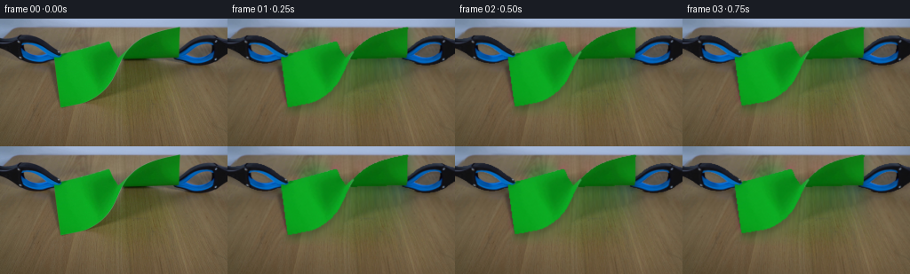
展开代码变化
--- 上一保存版本
+++ 本次保存版本
@@ -0,0 +1,170 @@
+from pathlib import Path
+import cv2
+import numpy as np
+from PIL import Image
+import artifact_io
+
+ROOT=Path(__file__).resolve().parent
+W,H=256,144
+S=3
+
+def smooth(a,b,x):
+ z=np.clip((x-a)/(b-a),0,1)
+ return z*z*(3-2*z)
+
+def prepare():
+ src=np.array(Image.open(ROOT/'first_frame.png').convert('RGB'))
+ f=src.astype(np.float32)
+ yy,xx=np.mgrid[:H,:W].astype(np.float32)
+ r,g,b=f.transpose(2,0,1)
+ paper=((g>r*1.6)&(g>b*1.4)&(g>50)).astype(np.uint8)
+ tools=((((b>r*1.10)&(b>g*1.03))|((r+g+b)<130))&(yy>15)&(yy<53)&((xx<72)|(xx>191))).astype(np.uint8)
+ n,lab,stats,_=cv2.connectedComponentsWithStats(tools)
+ for i in range(1,n):
+ if stats[i,cv2.CC_STAT_AREA]<35: tools[lab==i]=0
+ # Retain tiny bright metal fasteners inside the dark tool contour.
+ contours,_=cv2.findContours(tools,cv2.RETR_CCOMP,cv2.CHAIN_APPROX_SIMPLE)
+ tools=cv2.morphologyEx(tools,cv2.MORPH_CLOSE,np.ones((2,2),np.uint8))
+ # Closing with an even kernel is offset; bring it back to its physical outline.
+ tools=np.roll(np.roll(tools,-1,axis=0),-1,axis=1)
+ tools[-1]=0; tools[:,-1]=tools[:,-2]
+ toolL=tools.copy();toolL[:,90:]=0
+ toolR=tools.copy();toolR[:,:180]=0
+ # A clean plate reconstructed only from the visible wood in the supplied frame.
+ my=76+0.43*yy
+ mx=156+(xx-156)*(250+my)/(250+yy)
+ texture=cv2.remap(f,mx,my,cv2.INTER_LINEAR,borderMode=cv2.BORDER_REFLECT_101)
+ texture+=np.array([6.5,6.2,4.0],np.float32)[None,None,:]*(1-yy[:,:,None]/160)
+ texture=cv2.GaussianBlur(texture,(3,3),.45)
+ removal=cv2.dilate(paper,np.ones((7,7),np.uint8))
+ # original diffuse paper shadows, and contact shadows below both jaws
+ shadowmask=np.zeros((H,W),np.uint8)
+ cv2.fillPoly(shadowmask,[np.array([(68,86),(124,60),(144,45),(202,42),(212,56),(191,67),(151,70),(109,105),(65,110)])],1)
+ shadowmask=cv2.dilate(shadowmask,np.ones((5,5),np.uint8))
+ removal=np.maximum(removal,shadowmask)
+ # Seamless blending keeps surrounding wood exposure and surface texture continuous.
+ base=src.copy()
+ region=(removal*255).astype(np.uint8)
+ x,y,w,h=cv2.boundingRect(region)
+ base=cv2.seamlessClone(np.uint8(np.clip(texture,0,255)),base,region,(x+w//2,y+h//2),cv2.NORMAL_CLONE)
+ # small tool silhouettes are filled from their adjacent real table surface
+ tm=cv2.dilate(tools,np.ones((5,5),np.uint8))*255
+ base=cv2.inpaint(base,tm,4,cv2.INPAINT_TELEA)
+ # Remove only the narrow original tool shadow under the rims.
+ narrow=np.zeros((H,W),np.uint8)
+ cv2.ellipse(narrow,(39,50),(26,5),0,0,360,255,-1)
+ cv2.ellipse(narrow,(226,51),(27,5),0,0,360,255,-1)
+ narrow=cv2.bitwise_and(narrow,cv2.bitwise_not(tm))
+ base=cv2.inpaint(base,narrow,4,cv2.INPAINT_TELEA)
+ Image.fromarray(base).save(ROOT/'.tmp/background.png')
+ # High resolution premultiplied cut-outs prevent colored fringing on the wood.
+ hi=cv2.resize(f,(W*S,H*S),interpolation=cv2.INTER_CUBIC)
+ py,px=np.mgrid[:H*S,:W*S].astype(np.float32)/S
+ pa=cv2.resize(paper.astype(np.float32),(W*S,H*S),interpolation=cv2.INTER_LINEAR)
+ pa=cv2.GaussianBlur(pa,(3,3),.36)
+ # Border pixels use the nearest pure green sample rather than their wood mix.
+ pure=cv2.erode(paper,np.ones((3,3),np.uint8)).astype(bool)
+ _,indices=cv2.distanceTransformWithLabels((~pure).astype(np.uint8),cv2.DIST_L2,5,labelType=cv2.DIST_LABEL_PIXEL)
+ values=f[pure]
+ papercolor=values[indices-1]
+ # preserve the internal photographed shading exactly
+ papercolor[pure]=f[pure]
+ ph=cv2.resize(papercolor,(W*S,H*S),interpolation=cv2.INTER_CUBIC)
+ # The fracture runs diagonally across the thin, twisted central ligament.
+ edge=134.9+.57*(py-44)+.32*np.sin(py*5.3)+.14*np.sin(py*11.2)
+ leftsplit=np.clip((edge-px)*S+.5,0,1)
+ layers={
+ 'paper':(ph*pa[:,:,None],pa),
+ 'left':(ph*(pa*leftsplit)[:,:,None],pa*leftsplit),
+ 'right':(ph*(pa*(1-leftsplit))[:,:,None],pa*(1-leftsplit)),
+ }
+ for k,m in [('toolL',toolL),('toolR',toolR)]:
+ a=cv2.resize(m.astype(np.float32),(W*S,H*S),interpolation=cv2.INTER_LINEAR)
+ a=cv2.GaussianBlur(a,(3,3),.4)
+ layers[k]=(hi*a[:,:,None],a)
+ return src,cv2.resize(base.astype(np.float32),(W*S,H*S),interpolation=cv2.INTER_CUBIC),layers,px,py
+
+
+def warp(layer,mx,my):
+ col,a=layer
+ mpX=(mx*S).astype(np.float32);mpY=(my*S).astype(np.float32)
+ c=cv2.remap(col,mpX,mpY,cv2.INTER_LINEAR,borderMode=cv2.BORDER_CONSTANT)
+ m=cv2.remap(a,mpX,mpY,cv2.INTER_LINEAR,borderMode=cv2.BORDER_CONSTANT)
+ return c,m
+
+def composite(canvas,c,a):
+ return canvas*(1-a[:,:,None])+c
+
+def generate():
+ src,bg,layers,X,Y=prepare()
+ frames=[src]
+ shifts=[0,.35,.95,1.85,3.1,4.55,6.3,9.5,13.5,17.4,19.6,20.6,21.0,21.3,21.5,21.6,21.7,21.8,21.8,21.8]
+ for k in range(1,20):
+ d=shifts[k]
+ out=bg.copy()
+ # Rigid black-and-blue clamp motion, straight apart along the table.
+ Lc,La=warp(layers['toolL'],X+d,Y)
+ Rc,Ra=warp(layers['toolR'],X-d,Y)
+ # The soft shadows move with the objects rather than remaining as ghosts.
+ tool_a=np.maximum(La,Ra)
+ sh=cv2.GaussianBlur(tool_a,(0,0),1.6*S)
+ sh=np.roll(sh,2*S,axis=0)
+ out*=1-.17*sh[:,:,None]
+ out=composite(out,Lc,La);out=composite(out,Rc,Ra)
+ paperlist=[]
+ if k<=6:
+ stretch=1+2*d/136
+ mx=133+(X-133)/stretch
+ # Pulling draws out the initial curved fold, without stretching paper vertically.
+ lift=5.3*smooth(0,6,k)
+ sag=np.clip((Y-42)/58,0,1)*np.clip((145-mx)/82,0,1)
+ my=Y+lift*sag
+ c,a=warp(layers['paper'],mx,my)
+ if k>=5:
+ tip=133.15+(k-4)*1.45
+ # small advancing fissure; the same torn boundary becomes the free edges
+ slit=(mx>132.7)&(mx<tip)&(my>43.25+.45*(mx-133))&(my<43.75+.45*(mx-133))
+ aa=1-cv2.GaussianBlur(slit.astype(np.float32),(3,3),.4)
+ c*=aa[:,:,None];a*=aa
+ paperlist=[(c,a)]
+ else:
+ t=(k-6)/4
+ release=smooth(0,.65,t)
+ # Elastic recoil followed by gravity-driven damped sheet flapping.
+ al=(32*(1-np.exp(-t*2.0))+14*np.exp(-t*1.0)*np.sin(t*5.1))*np.pi/180
+ ar=(-79*(1-np.exp(-t*2.1))-22*np.exp(-t*1.0)*np.sin(t*5.4))*np.pi/180
+ stretch=1+.092*(1-release)
+ for name,anchor,ang,dx in [('right',(201,42),ar,d),('left',(65,42),al,-d)]:
+ ax,ay=anchor
+ qx=X-(ax+dx);qy=Y-ay
+ co,si=np.cos(ang),np.sin(ang)
+ u=co*qx+si*qy
+ v=-si*qx+co*qy
+ # Distance-dependent flex leaves the gripped corner completely fixed.
+ dist=np.clip(np.sqrt(u*u+v*v)/75,0,1)
+ curl=(3.8*np.exp(-t*.65)*np.sin(t*6.5)+(1.8 if name=='right' else 1))*dist**2
+ mx=ax+u/stretch
+ my=ay+v-curl
+ c,a=warp(layers[name],mx,my)
+ # The reverse illumination changes subtly as each sheet turns in place.
+ light=1+(0.13 if name=='right' else -.035)*release
+ lighting=light+0.045*np.sin((mx-ax)/19+t*3)*dist*np.exp(-t*.7)
+ c*=lighting[:,:,None]
+ paperlist.append((c,a))
+ # soft wood-received shadows from the flexible suspended paper
+ paperalpha=np.maximum.reduce([p[1] for p in paperlist])
+ sha=cv2.GaussianBlur(paperalpha,(0,0),3*S)
+ sha=np.roll(sha,5*S,axis=0)
+ out*=1-.17*sha[:,:,None]
+ for c,a in paperlist:out=composite(out,c,a)
+ # jaw tips overlap the clamped corner on the left
+ overlap=La*((X<(68-d))&(Y<43))
+ cc=Lc*np.divide(overlap,La,out=np.zeros_like(La),where=La>.001)[:,:,None]
+ out=composite(out,cc,overlap)
+ f=cv2.resize(np.clip(out,0,255),(W,H),interpolation=cv2.INTER_AREA).astype(np.uint8)
+ frames.append(f)
+ frames=np.asarray(frames,dtype=np.uint8)
+ artifact_io.save(frames,ROOT)
+ return frames
+
+if __name__=='__main__':generate()
候选 02播放与检查图
点击播放 · 原生 RGB 像素

展开代码变化
--- 上一保存版本
+++ 本次保存版本
@@ -31,10 +31,10 @@
toolL=tools.copy();toolL[:,90:]=0
toolR=tools.copy();toolR[:,:180]=0
# A clean plate reconstructed only from the visible wood in the supplied frame.
- my=76+0.43*yy
+ my=112+0.215*yy
mx=156+(xx-156)*(250+my)/(250+yy)
texture=cv2.remap(f,mx,my,cv2.INTER_LINEAR,borderMode=cv2.BORDER_REFLECT_101)
- texture+=np.array([6.5,6.2,4.0],np.float32)[None,None,:]*(1-yy[:,:,None]/160)
+ texture+=np.array([12.5,12.2,8.0],np.float32)[None,None,:]*(1-yy[:,:,None]/160)
texture=cv2.GaussianBlur(texture,(3,3),.45)
removal=cv2.dilate(paper,np.ones((7,7),np.uint8))
# original diffuse paper shadows, and contact shadows below both jaws
@@ -42,20 +42,18 @@
cv2.fillPoly(shadowmask,[np.array([(68,86),(124,60),(144,45),(202,42),(212,56),(191,67),(151,70),(109,105),(65,110)])],1)
shadowmask=cv2.dilate(shadowmask,np.ones((5,5),np.uint8))
removal=np.maximum(removal,shadowmask)
- # Seamless blending keeps surrounding wood exposure and surface texture continuous.
- base=src.copy()
- region=(removal*255).astype(np.uint8)
- x,y,w,h=cv2.boundingRect(region)
- base=cv2.seamlessClone(np.uint8(np.clip(texture,0,255)),base,region,(x+w//2,y+h//2),cv2.NORMAL_CLONE)
- # small tool silhouettes are filled from their adjacent real table surface
- tm=cv2.dilate(tools,np.ones((5,5),np.uint8))*255
- base=cv2.inpaint(base,tm,4,cv2.INPAINT_TELEA)
- # Remove only the narrow original tool shadow under the rims.
+ # Only areas hidden by the original objects are reconstructed. Broad feathering
+ # blends the extrapolated clean tabletop into its unchanged visible surrounds.
+ removal=np.maximum(removal,cv2.dilate(tools,np.ones((9,9),np.uint8)))
narrow=np.zeros((H,W),np.uint8)
- cv2.ellipse(narrow,(39,50),(26,5),0,0,360,255,-1)
- cv2.ellipse(narrow,(226,51),(27,5),0,0,360,255,-1)
- narrow=cv2.bitwise_and(narrow,cv2.bitwise_not(tm))
- base=cv2.inpaint(base,narrow,4,cv2.INPAINT_TELEA)
+ cv2.ellipse(narrow,(39,49),(28,6),0,0,360,1,-1)
+ cv2.ellipse(narrow,(226,51),(28,5),0,0,360,1,-1)
+ removal=np.maximum(removal,narrow)
+ mix=cv2.GaussianBlur(removal.astype(np.float32),(11,11),2.0)
+ # Ensure no original green pixels or black rims survive the clean plate.
+ mix=np.maximum(mix,cv2.dilate(paper,np.ones((3,3),np.uint8)).astype(np.float32))
+ mix=np.maximum(mix,tools.astype(np.float32))
+ base=np.uint8(np.clip(f*(1-mix[:,:,None])+texture*mix[:,:,None],0,255))
Image.fromarray(base).save(ROOT/'.tmp/background.png')
# High resolution premultiplied cut-outs prevent colored fringing on the wood.
hi=cv2.resize(f,(W*S,H*S),interpolation=cv2.INTER_CUBIC)
候选 03播放与检查图
点击播放 · 原生 RGB 像素
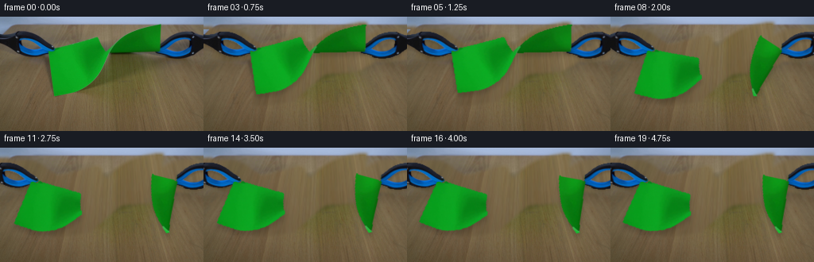
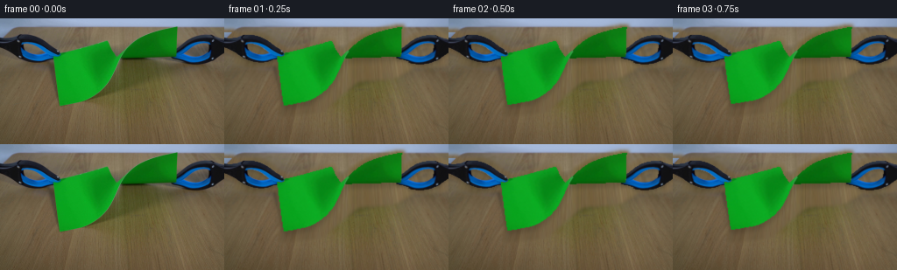
展开代码变化
--- 上一保存版本
+++ 本次保存版本
@@ -53,7 +53,14 @@
# Ensure no original green pixels or black rims survive the clean plate.
mix=np.maximum(mix,cv2.dilate(paper,np.ones((3,3),np.uint8)).astype(np.float32))
mix=np.maximum(mix,tools.astype(np.float32))
- base=np.uint8(np.clip(f*(1-mix[:,:,None])+texture*mix[:,:,None],0,255))
+ region=removal*255
+ # Clone interior wood gradients; seamless Poisson blend preserves the local lighting.
+ region[:3]=0; region[-3:]=0; region[:,:1]=0; region[:,-1:]=0
+ bx,by,bw,bh=cv2.boundingRect(region)
+ base=cv2.seamlessClone(np.uint8(np.clip(texture,0,255)),src,region,(bx+bw//2,by+bh//2),cv2.NORMAL_CLONE)
+ # The two frame-edge fragments have no surrounding boundary for Poisson blending.
+ base[:,:2]=np.uint8(f[:,:2]*(1-mix[:,:2,None])+texture[:,:2]*mix[:,:2,None])
+ base[:,-2:]=np.uint8(f[:,-2:]*(1-mix[:,-2:,None])+texture[:,-2:]*mix[:,-2:,None])
Image.fromarray(base).save(ROOT/'.tmp/background.png')
# High resolution premultiplied cut-outs prevent colored fringing on the wood.
hi=cv2.resize(f,(W*S,H*S),interpolation=cv2.INTER_CUBIC)
候选 04播放与检查图
点击播放 · 原生 RGB 像素

展开代码变化
代码未变化；重新保存了产物。
候选 05播放与检查图
点击播放 · 原生 RGB 像素
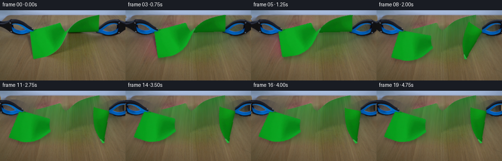
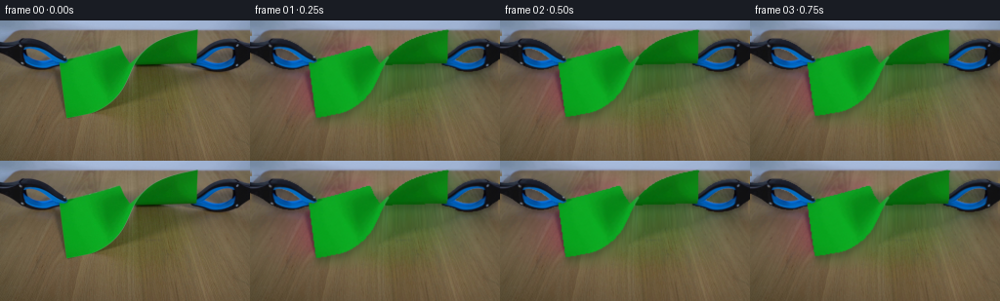
展开代码变化
--- 上一保存版本
+++ 本次保存版本
@@ -53,6 +53,8 @@
# Ensure no original green pixels or black rims survive the clean plate.
mix=np.maximum(mix,cv2.dilate(paper,np.ones((3,3),np.uint8)).astype(np.float32))
mix=np.maximum(mix,tools.astype(np.float32))
+ cv2.imwrite(str(ROOT/'.tmp/removal.png'),removal*255)
+ Image.fromarray(np.uint8(np.clip(texture,0,255))).save(ROOT/'.tmp/texture.png')
region=removal*255
# Clone interior wood gradients; seamless Poisson blend preserves the local lighting.
region[:3]=0; region[-3:]=0; region[:,:1]=0; region[:,-1:]=0
候选 06播放与检查图
点击播放 · 原生 RGB 像素

展开代码变化
--- 上一保存版本
+++ 本次保存版本
@@ -58,7 +58,7 @@
region=removal*255
# Clone interior wood gradients; seamless Poisson blend preserves the local lighting.
region[:3]=0; region[-3:]=0; region[:,:1]=0; region[:,-1:]=0
- bx,by,bw,bh=cv2.boundingRect(region)
+ bx,by,bw,bh=cv2.boundingRect(cv2.erode(region,np.ones((3,3),np.uint8)))
base=cv2.seamlessClone(np.uint8(np.clip(texture,0,255)),src,region,(bx+bw//2,by+bh//2),cv2.NORMAL_CLONE)
# The two frame-edge fragments have no surrounding boundary for Poisson blending.
base[:,:2]=np.uint8(f[:,:2]*(1-mix[:,:2,None])+texture[:,:2]*mix[:,:2,None])
候选 07播放与检查图
点击播放 · 原生 RGB 像素
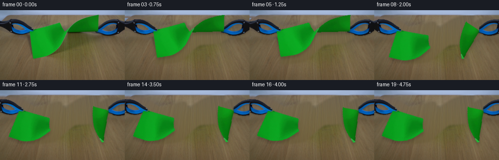
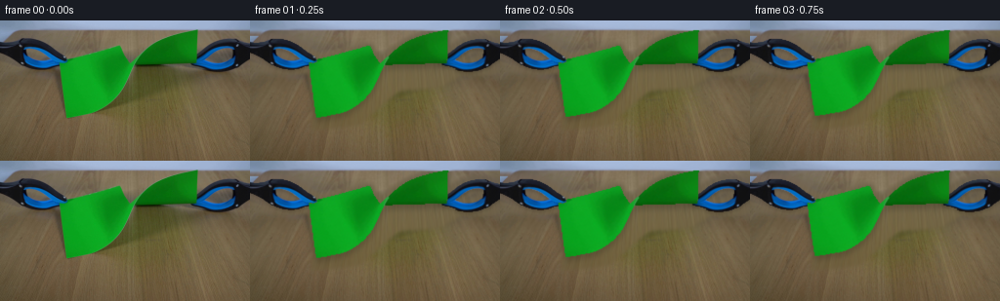
展开代码变化
--- 上一保存版本
+++ 本次保存版本
@@ -53,16 +53,20 @@
# Ensure no original green pixels or black rims survive the clean plate.
mix=np.maximum(mix,cv2.dilate(paper,np.ones((3,3),np.uint8)).astype(np.float32))
mix=np.maximum(mix,tools.astype(np.float32))
- cv2.imwrite(str(ROOT/'.tmp/removal.png'),removal*255)
- Image.fromarray(np.uint8(np.clip(texture,0,255))).save(ROOT/'.tmp/texture.png')
- region=removal*255
- # Clone interior wood gradients; seamless Poisson blend preserves the local lighting.
- region[:3]=0; region[-3:]=0; region[:,:1]=0; region[:,-1:]=0
- bx,by,bw,bh=cv2.boundingRect(cv2.erode(region,np.ones((3,3),np.uint8)))
- base=cv2.seamlessClone(np.uint8(np.clip(texture,0,255)),src,region,(bx+bw//2,by+bh//2),cv2.NORMAL_CLONE)
- # The two frame-edge fragments have no surrounding boundary for Poisson blending.
- base[:,:2]=np.uint8(f[:,:2]*(1-mix[:,:2,None])+texture[:,:2]*mix[:,:2,None])
- base[:,-2:]=np.uint8(f[:,-2:]*(1-mix[:,-2:,None])+texture[:,-2:]*mix[:,-2:,None])
+ # Recover the broad tabletop illumination from unobstructed surface samples.
+ xn=(xx-128)/128;yn=(yy-72)/72
+ basis=np.stack([np.ones_like(xx),xn,yn,xn*xn,xn*yn,yn*yn],axis=-1)
+ good=(cv2.dilate(removal,np.ones((13,13),np.uint8))==0)&(yy>16)&(r>65)
+ coeff=np.linalg.lstsq(basis[good],f[good],rcond=None)[0]
+ illumination=basis@coeff
+ detail=texture-cv2.GaussianBlur(texture,(0,0),3.0)
+ wood=illumination+detail*.9
+ # Preserve the horizontal back edge of the table and the blue-grey wall.
+ wall=np.clip((10.5-yy),0,1)
+ wallcolor=cv2.GaussianBlur(f,(0,0),2)
+ wallcolor[:12]=np.median(f[:9],axis=0)[None,:,:]
+ wood=wood*(1-wall[:,:,None])+wallcolor*wall[:,:,None]
+ base=np.uint8(np.clip(f*(1-mix[:,:,None])+wood*mix[:,:,None],0,255))
Image.fromarray(base).save(ROOT/'.tmp/background.png')
# High resolution premultiplied cut-outs prevent colored fringing on the wood.
hi=cv2.resize(f,(W*S,H*S),interpolation=cv2.INTER_CUBIC)
候选 08播放与检查图
点击播放 · 原生 RGB 像素

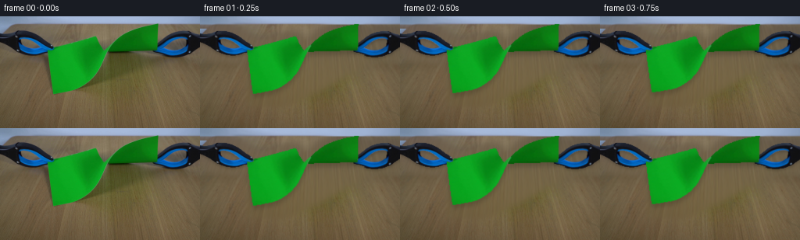
展开代码变化
--- 上一保存版本
+++ 本次保存版本
@@ -49,7 +49,10 @@
cv2.ellipse(narrow,(39,49),(28,6),0,0,360,1,-1)
cv2.ellipse(narrow,(226,51),(28,5),0,0,360,1,-1)
removal=np.maximum(removal,narrow)
- mix=cv2.GaussianBlur(removal.astype(np.float32),(11,11),2.0)
+ # Include the complete original penumbra before feathering the clean surface.
+ removal=cv2.dilate(removal,np.ones((9,9),np.uint8))
+ cv2.fillPoly(removal,[np.array([(64,86),(123,57),(174,48),(206,53),(199,70),(157,94),(108,116),(65,116)])],1)
+ mix=cv2.GaussianBlur(removal.astype(np.float32),(23,23),4.0)
# Ensure no original green pixels or black rims survive the clean plate.
mix=np.maximum(mix,cv2.dilate(paper,np.ones((3,3),np.uint8)).astype(np.float32))
mix=np.maximum(mix,tools.astype(np.float32))
可观测工具轨迹
实际执行的命令与返回图片。
命令 1exit 0
/bin/bash -lc 'ls -la && cat prompt.txt && cat GENERATION_RULES.md'
命令 2exit 0
/bin/bash -lc "cat artifact_io.py && python - <<'PY'
from PIL import Image
im=Image.open('first_frame.png');print(im.size);im.resize((1024,576)).save('.tmp/enlarged.png')
PY"命令 3exit 0
/bin/bash -lc "python - <<'PY'
import cv2,numpy as np
im=cv2.imread('first_frame.png');b,g,r=cv2.split(im);m=((g>r*1.6)&(g>b*1.4)&(g>50)).astype(np.uint8)*255
cv2.imwrite('.tmp/paper_mask.png',m)
print('cv',cv2.__version__)
PY"命令 4exit 0
/bin/bash -lc "python - <<'PY'
import numpy as np,cv2
im=cv2.imread('first_frame.png');b,g,r=im.astype(float).transpose(2,0,1);m=(g>r*1.6)&(g>b*1.4)&(g>50)
for y in range(35,62):
print(y, ''.join('#' if m[y,x] else '.' for x in range(120,149)))
PY"命令 5exit 0
/bin/bash -lc "python - <<'PY'
import cv2,numpy as np
im=cv2.imread('first_frame.png');g=im[:,:,1]
# rgb inspect rows bounding for mask tool
hsv=cv2.cvtColor(im,cv2.COLOR_BGR2HSV)
m=((hsv[:,:,2]<88)|((hsv[:,:,0]>90)&(hsv[:,:,0]<123)&(hsv[:,:,1]>80)))& (np.indices(g.shape)[0]<59)
m[:12]=0;m[:,73:193]=0
cv2.imwrite('.tmp/toolmask.png',m.astype('uint8')*255)
PY"命令 6exit 0
/bin/bash -lc "python - <<'PY'
from PIL import Image,ImageDraw
im=Image.open('first_frame.png').resize((1280,720));d=ImageDraw.Draw(im)
for x in range(0,256,10):
d.line((x*5,0,x*5,720),fill=(200,200,200),width=1);d.text((x*5,0),str(x),fill='white')
for y in range(0,144,10):
d.line((0,y*5,1280,y*5),fill=(200,200,200),width=1);d.text((0,y*5),str(y),fill='white')
im.save('.tmp/grid.png')
PY"命令 7exit 0
/bin/bash -lc "python - <<'PY'
import numpy as np,cv2
im=cv2.imread('first_frame.png');hsv=cv2.cvtColor(im,cv2.COLOR_BGR2HSV)
for xy in [(10,25),(22,21),(40,23),(65,39),(26,31),(41,36),(211,28),(240,23),(223,35),(238,38),(63,44),(194,44)]:
x,y=xy;print(xy,im[y,x],hsv[y,x])
PY"命令 8exit 0
/bin/bash -lc "python - <<'PY'
from PIL import Image
Image.open('first_frame.png').crop((115,30,154,70)).resize((780,800)).save('.tmp/neck.png')
PY"命令 9exit 0
/bin/bash -lc "python - <<'PY'
import numpy as np,cv2
im=cv2.imread('first_frame.png');b,g,r=im.astype(float).transpose(2,0,1);Y,X=np.indices(b.shape)
m=(((b>r*1.10)&(b>g*1.03))|((r+g+b)<130))& (Y>15)& (Y<53)&((X<72)|(X>191))
m=m.astype(np.uint8)*255
n,lab,stats,_=cv2.connectedComponentsWithStats(m)
for i in range(1,n):
if stats[i,cv2.CC_STAT_AREA]<40:m[lab==i]=0
cv2.imwrite('.tmp/toolmask2.png',m)
o=im.copy();o[m==0]=255
cv2.imwrite('.tmp/tools.png',o)
PY"命令 10exit 0
/bin/bash -lc "python - <<'PY'
import cv2,numpy as np
im=cv2.imread('first_frame.png');b,g,r=im.astype(float).transpose(2,0,1);m=((g>r*1.6)&(g>b*1.4)&(g>50)).astype(np.uint8)*255
c=max(cv2.findContours(m,cv2.RETR_EXTERNAL,cv2.CHAIN_APPROX_NONE)[0],key=cv2.contourArea)
print(cv2.approxPolyDP(c,1.1,True).reshape(-1,2).tolist())
PY"命令 11exit 0
/bin/bash -lc "cat > generate.py <<'PY'
from pathlib import Path
import cv2
import numpy as np
from PIL import Image
import artifact_io
ROOT=Path(__file__).resolve().parent
W,H=256,144
S=3
def smooth(a,b,x):
z=np.clip((x-a)/(b-a),0,1)
return z*z*(3-2*z)
def prepare():
src=np.array(Image.open(ROOT/'first_frame.png').convert('RGB'))
f=src.astype(np.float32)
yy,xx=np.mgrid[:H,:W].astype(np.float32)
r,g,b=f.transpose(2,0,1)
paper=((g>r*1.6)&(g>b*1.4)&(g>50)).astype(np.uint8)
tools=((((b>r*1.10)&(b>g*1.03))|((r+g+b)<130))&(yy>15)&(yy<53)&((xx<72)|(xx>191))).astype(np.uint8)
n,lab,stats,_=cv2.connectedComponentsWithStats(tools)
for i in range(1,n):
if stats[i,cv2.CC_STAT_AREA]<35: tools[lab==i]=0
# Retain tiny bright metal fasteners inside the dark tool contour.
contours,_=cv2.findContours(tools,cv2.RETR_CCOMP,cv2.CHAIN_APPROX_SIMPLE)
tools=cv2.morphologyEx(tools,cv2.MORPH_CLOSE,np.ones((2,2),np.uint8))
# Closing with an even kernel is offset; bring it back to its physical outline.
tools=np.roll(np.roll(tools,-1,axis=0),-1,axis=1)
tools[-1]=0; tools[:,-1]=tools[:,-2]
toolL=tools.copy();toolL[:,90:]=0
toolR=tools.copy();toolR[:,:180]=0
# A clean plate reconstructed only from the visible wood in the supplied frame.
my=76+0.43*yy
mx=156+(xx-156)*(250+my)/(250+yy)
texture=cv2.remap(f,mx,my,cv2.INTER_LINEAR,borderMode=cv2.BORDER_REFLECT_101)
texture+=np.array([6.5,6.2,4.0],np.float32)[None,None,:]*(1-yy[:,:,None]/160)
texture=cv2.GaussianBlur(texture,(3,3),.45)
removal=cv2.dilate(paper,np.ones((7,7),np.uint8))
# original diffuse paper shadows, and contact shadows below both jaws
shadowmask=np.zeros((H,W),np.uint8)
cv2.fillPoly(shadowmask,[np.array([(68,86),(124,60),(144,45),(202,42),(212,56),(191,67),(151,70),(109,105),(65,110)])],1)
shadowmask=cv2.dilate(shadowmask,np.ones((5,5),np.uint8))
removal=np.maximum(removal,shadowmask)
# Seamless blending keeps surrounding wood exposure and surface texture continuous.
base=src.copy()
region=(removal*255).astype(np.uint8)
x,y,w,h=cv2.boundingRect(region)
base=cv2.seamlessClone(np.uint8(np.clip(texture,0,255)),base,region,(x+w//2,y+h//2),cv2.NORMAL_CLONE)
# small tool silhouettes are filled from their adjacent real table surface
tm=cv2.dilate(tools,np.ones((5,5),np.uint8))*255
base=cv2.inpaint(base,tm,4,cv2.INPAINT_TELEA)
# Remove only the narrow original tool shadow under the rims.
narrow=np.zeros((H,W),np.uint8)
cv2.ellipse(narrow,(39,50),(26,5),0,0,360,255,-1)
cv2.ellipse(narrow,(226,51),(27,5),0,0,360,255,-1)
narrow=cv2.bitwise_and(narrow,cv2.bitwise_not(tm))
base=cv2.inpaint(base,narrow,4,cv2.INPAINT_TELEA)
Image.fromarray(base).save(ROOT/'.tmp/background.png')
# High resolution premultiplied cut-outs prevent colored fringing on the wood.
hi=cv2.resize(f,(W*S,H*S),interpolation=cv2.INTER_CUBIC)
py,px=np.mgrid[:H*S,:W*S].astype(np.float32)/S
pa=cv2.resize(paper.astype(np.float32),(W*S,H*S),interpolation=cv2.INTER_LINEAR)
pa=cv2.GaussianBlur(pa,(3,3),.36)
# Border pixels use the nearest pure green sample rather than their wood mix.
pure=cv2.erode(paper,np.ones((3,3),np.uint8)).astype(bool)
_,indices=cv2.distanceTransformWithLabels((~pure).astype(np.uint8),cv2.DIST_L2,5,labelType=cv2.DIST_LABEL_PIXEL)
values=f[pure]
papercolor=values[indices-1]
# preserve the internal photographed shading exactly
papercolor[pure]=f[pure]
ph=cv2.resize(papercolor,(W*S,H*S),interpolation=cv2.INTER_CUBIC)
# The fracture runs diagonally across the thin, twisted central ligament.
edge=134.9+.57*(py-44)+.32*np.sin(py*5.3)+.14*np.sin(py*11.2)
leftsplit=np.clip((edge-px)*S+.5,0,1)
layers={
'paper':(ph*pa[:,:,None],pa),
'left':(ph*(pa*leftsplit)[:,:,None],pa*leftsplit),
'right':(ph*(pa*(1-leftsplit))[:,:,None],pa*(1-leftsplit)),
}
for k,m in [('toolL',toolL),('toolR',toolR)]:
a=cv2.resize(m.astype(np.float32),(W*S,H*S),interpolation=cv2.INTER_LINEAR)
a=cv2.GaussianBlur(a,(3,3),.4)
layers[k]=(hi*a[:,:,None],a)
return src,cv2.resize(base.astype(np.float32),(W*S,H*S),interpolation=cv2.INTER_CUBIC),layers,px,py
def warp(layer,mx,my):
col,a=layer
mpX=(mx*S).astype(np.float32);mpY=(my*S).astype(np.float32)
c=cv2.remap(col,mpX,mpY,cv2.INTER_LINEAR,borderMode=cv2.BORDER_CONSTANT)
m=cv2.remap(a,mpX,mpY,cv2.INTER_LINEAR,borderMode=cv2.BORDER_CONSTANT)
return c,m
def composite(canvas,c,a):
return canvas*(1-a[:,:,None])+c
def generate():
src,bg,layers,X,Y=prepare()
frames=[src]
shifts=[0,.35,.95,1.85,3.1,4.55,6.3,9.5,13.5,17.4,19.6,20.6,21.0,21.3,21.5,21.6,21.7,21.8,21.8,21.8]
for k in range(1,20):
d=shifts[k]
out=bg.copy()
# Rigid black-and-blue clamp motion, straight apart along the table.
Lc,La=warp(layers['toolL'],X+d,Y)
Rc,Ra=warp(layers['toolR'],X-d,Y)
# The soft shadows move with the objects rather than remaining as ghosts.
tool_a=np.maximum(La,Ra)
sh=cv2.GaussianBlur(tool_a,(0,0),1.6*S)
sh=np.roll(sh,2*S,axis=0)
out*=1-.17*sh[:,:,None]
out=composite(out,Lc,La);out=composite(out,Rc,Ra)
paperlist=[]
if k<=6:
stretch=1+2*d/136
mx=133+(X-133)/stretch
# Pulling draws out the initial curved fold, without stretching paper vertically.
lift=5.3*smooth(0,6,k)
sag=np.clip((Y-42)/58,0,1)*np.clip((145-mx)/82,0,1)
my=Y+lift*sag
c,a=warp(layers['paper'],mx,my)
if k>=5:
tip=133.15+(k-4)*1.45
# small advancing fissure; the same torn boundary becomes the free edges
slit=(mx>132.7)&(mx<tip)&(my>43.25+.45*(mx-133))&(my<43.75+.45*(mx-133))
aa=1-cv2.GaussianBlur(slit.astype(np.float32),(3,3),.4)
c*=aa[:,:,None];a*=aa
paperlist=[(c,a)]
else:
t=(k-6)/4
release=smooth(0,.65,t)
# Elastic recoil followed by gravity-driven damped sheet flapping.
al=(32*(1-np.exp(-t*2.0))+14*np.exp(-t*1.0)*np.sin(t*5.1))*np.pi/180
ar=(-79*(1-np.exp(-t*2.1))-22*np.exp(-t*1.0)*np.sin(t*5.4))*np.pi/180
stretch=1+.092*(1-release)
for name,anchor,ang,dx in [('right',(201,42),ar,d),('left',(65,42),al,-d)]:
ax,ay=anchor
qx=X-(ax+dx);qy=Y-ay
co,si=np.cos(ang),np.sin(ang)
u=co*qx+si*qy
v=-si*qx+co*qy
# Distance-dependent flex leaves the gripped corner completely fixed.
dist=np.clip(np.sqrt(u*u+v*v)/75,0,1)
curl=(3.8*np.exp(-t*.65)*np.sin(t*6.5)+(1.8 if name=='right' else 1))*dist**2
mx=ax+u/stretch
my=ay+v-curl
c,a=warp(layers[name],mx,my)
# The reverse illumination changes subtly as each sheet turns in place.
light=1+(0.13 if name=='right' else -.035)*release
lighting=light+0.045*np.sin((mx-ax)/19+t*3)*dist*np.exp(-t*.7)
c*=lighting[:,:,None]
paperlist.append((c,a))
# soft wood-received shadows from the flexible suspended paper
paperalpha=np.maximum.reduce([p[1] for p in paperlist])
sha=cv2.GaussianBlur(paperalpha,(0,0),3*S)
sha=np.roll(sha,5*S,axis=0)
out*=1-.17*sha[:,:,None]
for c,a in paperlist:out=composite(out,c,a)
# jaw tips overlap the clamped corner on the left
overlap=La*((X<(68-d))&(Y<43))
cc=Lc*np.divide(overlap,La,out=np.zeros_like(La),where=La>.001)[:,:,None]
out=composite(out,cc,overlap)
f=cv2.resize(np.clip(out,0,255),(W,H),interpolation=cv2.INTER_AREA).astype(np.uint8)
frames.append(f)
frames=np.asarray(frames,dtype=np.uint8)
artifact_io.save(frames,ROOT)
return frames
if __name__=='__main__':generate()
PY
python generate.py"命令 12exit 0
/bin/bash -lc "python - <<'PY'
p='generate.py'
s=open(p).read().replace('my=76+0.43*yy','my=112+0.215*yy').replace(\"[6.5,6.2,4.0]\",\"[12.5,12.2,8.0]\")
a=s.index(' # Seamless blending');b=s.index(\" Image.fromarray(base)\",a)
s=s[:a]+''' # Only areas hidden by the original objects are reconstructed. Broad feathering
# blends the extrapolated clean tabletop into its unchanged visible surrounds.
removal=np.maximum(removal,cv2.dilate(tools,np.ones((9,9),np.uint8)))
narrow=np.zeros((H,W),np.uint8)
cv2.ellipse(narrow,(39,49),(28,6),0,0,360,1,-1)
cv2.ellipse(narrow,(226,51),(28,5),0,0,360,1,-1)
removal=np.maximum(removal,narrow)
mix=cv2.GaussianBlur(removal.astype(np.float32),(11,11),2.0)
# Ensure no original green pixels or black rims survive the clean plate.
mix=np.maximum(mix,cv2.dilate(paper,np.ones((3,3),np.uint8)).astype(np.float32))
mix=np.maximum(mix,tools.astype(np.float32))
base=np.uint8(np.clip(f*(1-mix[:,:,None])+texture*mix[:,:,None],0,255))
''' +s[b:]
open(p,'w').write(s)
PY
python generate.py"命令 13exit 0
/bin/bash -lc "cp generate.py .tmp/generate_prev.py
python - <<'PY'
p='generate.py';s=open(p).read();s=s.replace('base=np.uint8(np.clip(f*(1-mix[:,:,None])+texture*mix[:,:,None],0,255))','''region=removal*255
# Clone interior wood gradients; seamless Poisson blend preserves the local lighting.
region[:3]=0; region[-3:]=0; region[:,:1]=0; region[:,-1:]=0
bx,by,bw,bh=cv2.boundingRect(region)
base=cv2.seamlessClone(np.uint8(np.clip(texture,0,255)),src,region,(bx+bw//2,by+bh//2),cv2.NORMAL_CLONE)
# The two frame-edge fragments have no surrounding boundary for Poisson blending.
base[:,:2]=np.uint8(f[:,:2]*(1-mix[:,:2,None])+texture[:,:2]*mix[:,:2,None])
base[:,-2:]=np.uint8(f[:,-2:]*(1-mix[:,-2:,None])+texture[:,-2:]*mix[:,-2:,None])''')
open(p,'w').write(s)
PY
python generate.py"命令 14exit 0
/bin/bash -lc "python - <<'PY'
import cv2,numpy as np
im=cv2.imread('first_frame.png');b,g,r=im.astype(float).transpose(2,0,1);p=((g>r*1.6)&(g>b*1.4)&(g>50)).astype('uint8');Y,X=np.indices(p.shape)
t=((((b>r*1.10)&(b>g*1.03))|((r+g+b)<130))&(Y>15)&(Y<53)&((X<72)|(X>191))).astype(np.uint8)
m=cv2.dilate(p,np.ones((11,11),np.uint8));m=np.maximum(m,cv2.dilate(t,np.ones((9,9),np.uint8)))
bg=cv2.inpaint(im,m*255,7,cv2.INPAINT_TELEA);cv2.imwrite('.tmp/inpaint.jpg',bg)
PY"命令 15exit 0
/bin/bash -lc "python - <<'PY'
p='generate.py';s=open(p).read();s=s.replace('region=removal*255','cv2.imwrite(str(ROOT/\\'.tmp/removal.png\\'),removal*255)\\n Image.fromarray(np.uint8(np.clip(texture,0,255))).save(ROOT/\\'.tmp/texture.png\\')\\n region=removal*255');open(p,'w').write(s)
PY
python generate.py"命令 16exit 0
/bin/bash -lc "python - <<'PY'
p='generate.py';s=open(p).read().replace('bx,by,bw,bh=cv2.boundingRect(region)','bx,by,bw,bh=cv2.boundingRect(cv2.erode(region,np.ones((3,3),np.uint8)))');open(p,'w').write(s)
PY
python generate.py"命令 17exit 0
/bin/bash -lc "cp generate.py .tmp/poisson.py
python - <<'PY'
p='generate.py';s=open(p).read();a=s.index(' cv2.imwrite(str(ROOT/');b=s.index(' Image.fromarray(base)',a)
s=s[:a]+''' # Recover the broad tabletop illumination from unobstructed surface samples.
xn=(xx-128)/128;yn=(yy-72)/72
basis=np.stack([np.ones_like(xx),xn,yn,xn*xn,xn*yn,yn*yn],axis=-1)
good=(cv2.dilate(removal,np.ones((13,13),np.uint8))==0)&(yy>16)&(r>65)
coeff=np.linalg.lstsq(basis[good],f[good],rcond=None)[0]
illumination=basis@coeff
detail=texture-cv2.GaussianBlur(texture,(0,0),3.0)
wood=illumination+detail*.9
# Preserve the horizontal back edge of the table and the blue-grey wall.
wall=np.clip((10.5-yy),0,1)
wallcolor=cv2.GaussianBlur(f,(0,0),2)
wallcolor[:12]=np.median(f[:9],axis=0)[None,:,:]
wood=wood*(1-wall[:,:,None])+wallcolor*wall[:,:,None]
base=np.uint8(np.clip(f*(1-mix[:,:,None])+wood*mix[:,:,None],0,255))
''' +s[b:]
open(p,'w').write(s)
PY
python generate.py"命令 18exit 0
/bin/bash -lc "python - <<'PY'
p='generate.py';s=open(p).read();s=s.replace(' mix=cv2.GaussianBlur(removal.astype(np.float32),(11,11),2.0)',''' # Include the complete original penumbra before feathering the clean surface.
removal=cv2.dilate(removal,np.ones((9,9),np.uint8))
cv2.fillPoly(removal,[np.array([(64,86),(123,57),(174,48),(206,53),(199,70),(157,94),(108,116),(65,116)])],1)
mix=cv2.GaussianBlur(removal.astype(np.float32),(23,23),4.0)''')
open(p,'w').write(s)
PY
python generate.py"命令 19exit 0
/bin/bash -lc "python - <<'PY'
import numpy as np
from PIL import Image
from pathlib import Path
im=np.array(Image.open('first_frame.png').convert('RGB'))
frames=np.stack([np.array(Image.open(p).convert('RGB')) for p in sorted(Path('frames').glob('*.png'))])
assert frames.shape==(20,144,256,3)
assert frames.dtype==np.uint8
assert np.array_equal(frames[0],im)
a=np.load('pixels.npz')['pixels'];print(frames.shape,frames.dtype,'frame00 identical:',np.array_equal(frames[0],im),'artifact:',a.shape)
PY
command -v ffmpeg || true"视觉工具实际返回图片 1
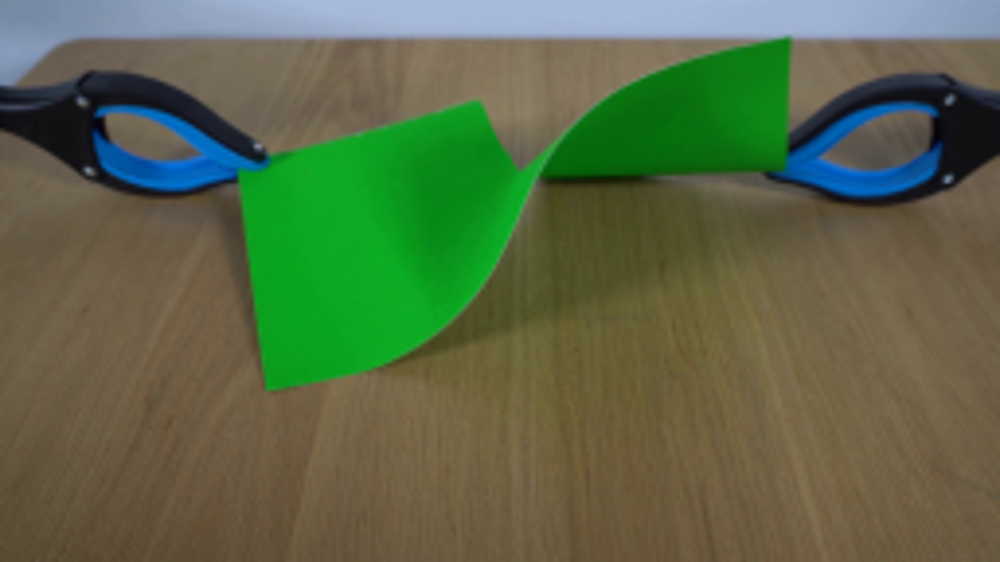
视觉工具实际返回图片 2
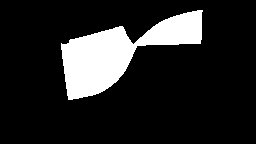
视觉工具实际返回图片 3
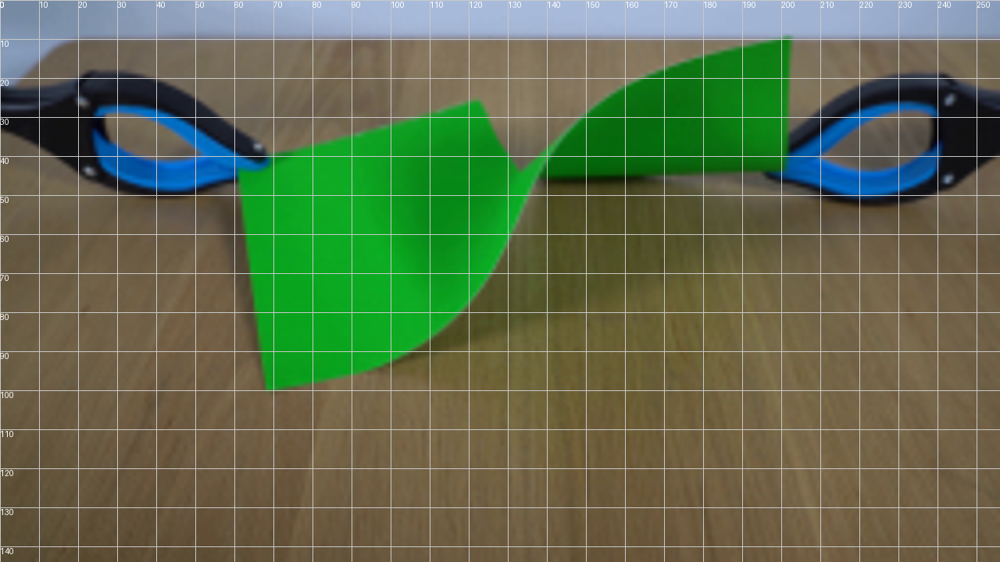
视觉工具实际返回图片 4
视觉工具实际返回图片 5
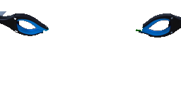
视觉工具实际返回图片 6
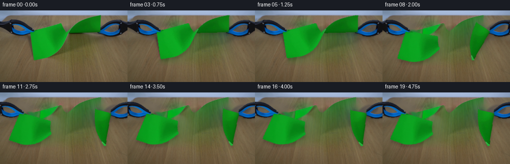
视觉工具实际返回图片 7
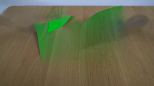
视觉工具实际返回图片 8

视觉工具实际返回图片 9

视觉工具实际返回图片 10

视觉工具实际返回图片 11
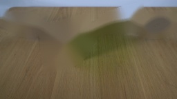
视觉工具实际返回图片 12
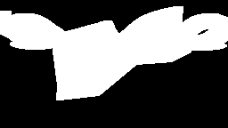
视觉工具实际返回图片 13
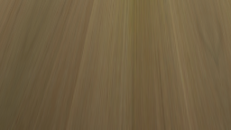
视觉工具实际返回图片 14
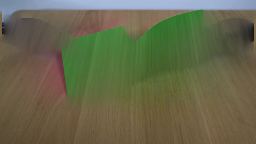
视觉工具实际返回图片 15

视觉工具实际返回图片 16
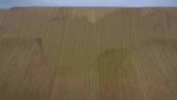
视觉工具实际返回图片 17
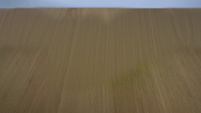
视觉工具实际返回图片 18
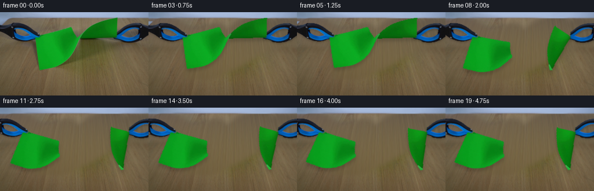
保存候选 8 份；完成命令 19 次；可验证图片返回 18 张。原始 API 响应与完整日志保留在本地。